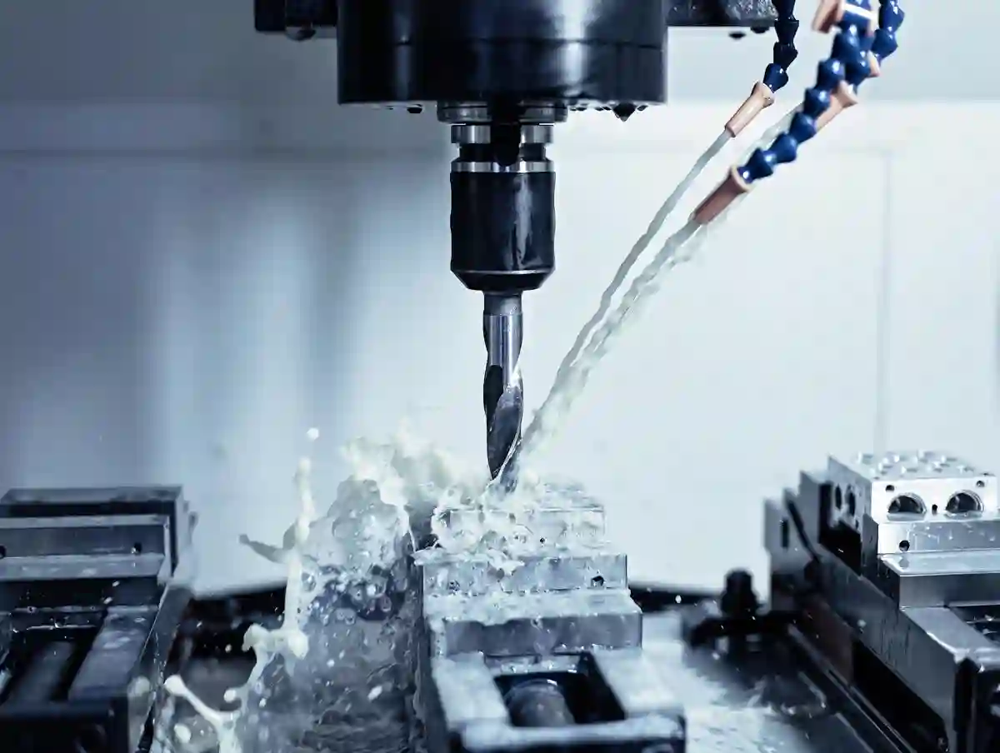
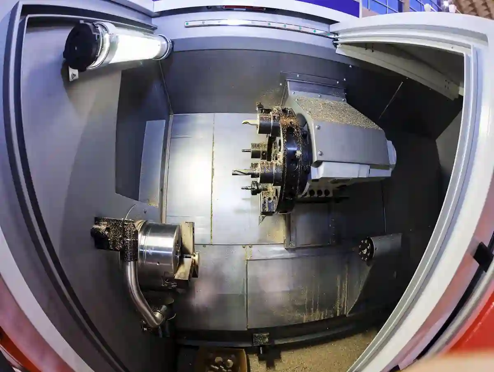
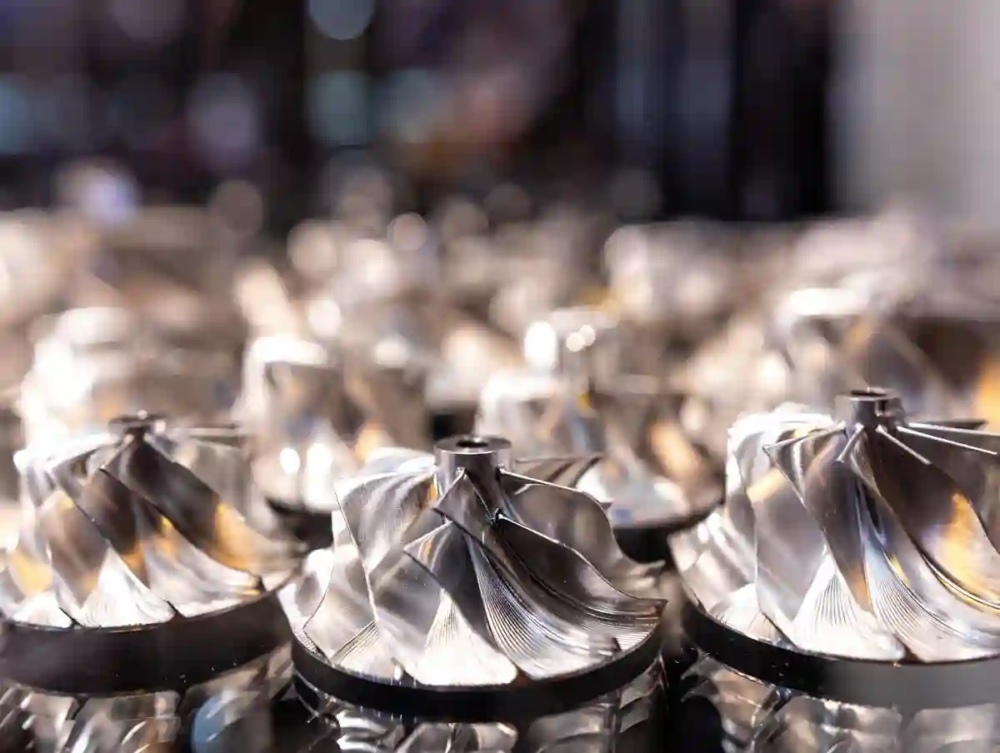
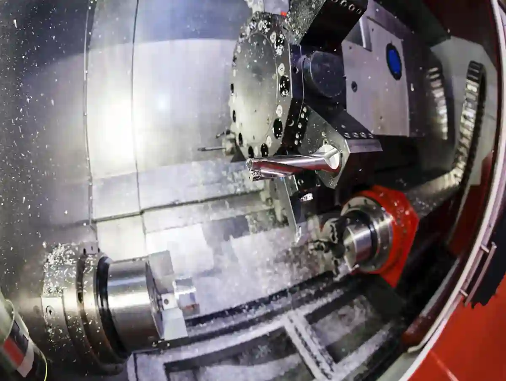

Prototip Talaşlı İmalat Süreci Nasıl İlerler?
Bir ürünün sahada gerçekten çalışıp çalışmayacağı çoğu zaman çizimde değil, ilk fiziksel parçada anlaşılır. Bu yüzden prototip talaşlı imalat, yalnızca bir numune çıkarmak için yapılan ara iş değil; tasarımın üretilebilirliğini, ölçüsel doğruluğunu, montaj davranışını ve maliyet mantığını test eden kritik bir mühendislik aşamasıdır. Özellikle standart kataloğa girmeyen, fonksiyon odaklı veya revizyona açık parçalar söz konusuysa, ilk üretim adımı doğrudan risk yönetiminin parçasına dönüşür.
Sanayide birçok ekip prototipi yalnızca “ilk örnek” gibi görür. Oysa iyi yürütülen bir prototip parça üretimi süreci; teknik çizimde görünmeyen köşe radyüsü problemlerini, yanlış tolerans dağılımını, gereksiz operasyon sayısını, bağlama zorluklarını ve montaj sırasında ortaya çıkacak sapmaları daha seri üretim başlamadan görünür hale getirir. Böylece hatalar pahalı hale gelmeden önce düzeltilir. Bu da hem mühendislik ekibinin hem satın alma tarafının daha doğru karar almasını sağlar.
AYMAKSAN’ın mevcut site yapısında Prototip Üretim ve Ar-Ge Desteği sayfası, prototipin yalnızca görsel doğrulama değil; üretilebilirlik, fonksiyon ve seri üretime hazırlık için stratejik bir aşama olduğunu açıkça konumluyor. Aynı yapıda CNC Frezeleme ve Dik İşleme ile CNC Tornalama sayfaları da prototipten seri üretime geçiş ve revizyon akışına temas ediyor.
Prototip Talaşlı İmalat Nedir ve Neden Kritik Bir Aşamadır?
Prototip talaşlı imalat, teknik resmi veya 3D modeli bulunan bir parçanın; gerçek malzeme, gerçek tolerans ve gerçek kullanım senaryosuna mümkün olduğunca yakın biçimde işlenerek doğrulanması sürecidir. Kısacası bu aşama, “tasarım teoride doğru mu?” sorusunu “üretimde ve kullanımda da doğru mu?” sorusuna dönüştürür.
Bu yaklaşımın daha geniş üretim bağlamını görmek için Talaşlı İmalat Blog sayfamızdaki teknik içeriklere de göz atabilirsiniz.

Prototipin Asıl Amacı Numune Değil Karar Üretmektir
Bir parçanın ilk kez işlenmesi, yalnızca fiziksel bir çıktı almak için yapılmaz. Asıl amaç; geometrinin işlenebilir olup olmadığını, seçilen malzemenin uygun davranıp davranmadığını, toleransların gereğinden dar mı yoksa işlev için yetersiz mi kaldığını ve montaj ilişkilerinin sahada nasıl sonuç vereceğini görmektir. Bu nedenle iyi bir prototip parça üretimi süreci, tasarımcı ile üretimci arasında ortak bir teknik dil kurar.
Hangi Projelerde Prototip Zorunlu Hale Gelir?
Yeni ürün geliştirme, mevcut parçanın iyileştirilmesi, ithal muadil yerine yerli alternatif geliştirme, dar toleranslı fonksiyonel parça ihtiyacı, düşük adetli pilot üretim ve sahada sorun çıkaran bir bileşenin yeniden kurgulanması gibi senaryolarda ar-ge parça imalatı ve prototipleme neredeyse zorunludur. Çünkü bu projelerde risk, yalnızca ölçü hatası değildir; aynı zamanda işlev, dayanım, bakım kolaylığı ve maliyet dengesidir.
Seri Üretimden Önce Görülmesi Gereken 3 Temel Risk
Üretilebilirlik Riski
Parça çizimde mümkün görünse de takım erişimi, bağlama kurgusu veya operasyon sırası nedeniyle sahada problem çıkarabilir.
Fonksiyon Riski
Parça ölçü olarak doğru olsa bile montajda sürtme, gevşeme, hizasızlık veya yük altında deformasyon gösterebilir.
Maliyet Riski
İlk bakışta doğru görünen tasarım, gerçekte gereksiz operasyon, uzun işleme süresi veya zor toleranslar nedeniyle pahalı hale gelebilir.
Bu yüzden test parçası imalatı, ürün geliştirme döngüsünün sadece teknik değil, ekonomik filtresidir. Parçayı işlemek kadar, parçanın neden o şekilde işlendiğini anlamak da önemlidir.
Tasarım Dosyasından Üretim Planına Geçiş Nasıl Olur?
Bir prototip talaşlı imalat projesi çizimle başlar ama yalnızca çizimle yürümez. İlk adım, parçanın geometrik mantığını, işlevini ve kritik bölgelerini okumaktır. Çünkü üretim planı, ölçülere değil; ölçülerin neden var olduğuna göre kurulur.
Tasarım doğrulamasından saha uygulanabilirliğine uzanan çerçeveyi daha detaylı incelemek isterseniz Prototip Üretim ve Ar-Ge Desteği sayfamız konuya tamamlayıcı bir perspektif sunar.
: İlk Teknik İnceleme: Çizim Ne Söylüyor, Ne Saklıyor?
Teknik resim ya da 3D model geldiğinde önce parçada kritik çaplar, oturma yüzeyleri, referans datums, tolerans zincirleri, dişler, kanal yapıları, cepler ve montajla ilişkili bölgeler incelenir. Burada amaç “bu parça yapılır mı?” sorusundan çok, “bu parça en doğru hangi stratejiyle yapılır?” sorusuna cevap bulmaktır. İyi bir prototip parça üretimi süreci, bu aşamada belirsizlikleri ortaya çıkarır.
Parçanın hangi yüzeylerinin fonksiyonel olduğu, hangi ölçülerin yalnızca referans kaldığı, hangi toleransların gerçekten kritik olduğu netleşmeden üretime girmek çoğu zaman zaman kaybıdır. Özellikle ar-ge parça imalatı projelerinde revizyon ihtimali yüksek olduğu için, ilk teknik analiz olabildiğince şeffaf yürütülmelidir.
DFM Yaklaşımı: Çizimi Olduğu Gibi İşlemek Yerine Doğru Şekilde Üretmek
DFM yani üretilebilirlik analizi, prototipte en çok değer üreten aşamalardan biridir. Burada parça geometrisinin kesici takım erişimine uygunluğu, standart takım çaplarıyla işlenebilirliği, bağlama kolaylığı, ince duvar davranışı, talaş tahliyesi ve operasyon sayısı değerlendirilir.
Birçok projede tasarım teknik olarak doğrudur; fakat üretim açısından gereksiz yere zorlaştırılmıştır. Örneğin çok dar iç köşeler, gereğinden küçük radyüsler, gereksiz simetri kırıkları veya montaj açısından fayda üretmeyen yüzey hassasiyetleri işleme maliyetini yükseltir. İyi yürütülen düşük adet cnc üretim senaryolarında prototip, bu tasarım fazlalıklarını temizlemek için kullanılır.
Malzeme Seçimi Prototipte Nasıl Yapılmalı?
Prototipte “yaklaşık malzeme” kullanmak her zaman doğru değildir. Eğer amaç yalnızca görsel kontrolse farklı malzeme düşünülebilir; ancak mekanik davranış, montaj uyumu, ağırlık, ısıl etkiler veya yüzey davranışı test edilecekse parça nihai malzemeye olabildiğince yakın seçilmelidir. Çünkü test parçası imalatı, yalnızca geometri doğrulaması değil, malzeme davranışını da okumak için yapılır.
Alüminyum, çelik, paslanmaz, pirinç veya mühendislik plastikleri arasında seçim yapılırken; yalnızca işlenebilirlik değil, nihai kullanım şartları da dikkate alınmalıdır. Özellikle bir parçanın seri üretimde çelikten yapılması planlanıyorsa, prototipi alüminyumdan üretmek montajı gösterebilir ama gerçek rijitlik veya aşınma davranışını tam vermez. Bu nedenle prototipten seri üretime geçiş kurgulanırken malzeme kararı baştan ciddi biçimde ele alınmalıdır.
Operasyon Rotası Bu Aşamada Kurulur
Parça tornalık mı, frezelik mi, yoksa hibrit operasyon mu gerektiriyor? Hangi yüzey ilk referans olacak? Kaç bağlama yapılacak? Ara ölçüm nerede devreye girecek? Yüzey kalitesi hangi sırada elde edilecek? Bu soruların cevabı, sahadaki işleme süresini doğrudan belirler.
AYMAKSAN’ın mevcut yapısında frezeleme ve tornalama sayfalarının her ikisi de prototip aşamasının seri üretim kalitesini belirlediğini vurguluyor. Bu, bu yazıda kullanacağınız semantik eksenin doğru olduğunu gösterir: prototip, üretim öncesi deneme değil; üretim modelinin ilk doğrulamasıdır.
CNC İşleme Stratejisi Prototip Sürecinde Nasıl Belirlenir?
Bir prototip talaşlı imalat projesinde makine seçimi tek başına yeterli değildir. Asıl belirleyici olan; geometriye uygun işleme yöntemi, bağlama mantığı, takım erişimi ve operasyon sırasının doğru kurgulanmasıdır. Çünkü prototipte yapılan hata, seri üretime yanlış bilgi taşır.
Parça geometrisine göre operasyon seçiminin nasıl şekillendiğini görmek için CNC Frezeleme ve Dik İşleme ve CNC Tornalama sayfalarımızı da inceleyebilirsiniz.

Tornalama mı Frezeleme mi, Yoksa Kombine Yaklaşım mı?
Eğer parça eksenel simetri taşıyorsa, çap ve omuz ilişkileri baskınsa, diş, kanal veya alın operasyonları öne çıkıyorsa tornalama doğal olarak ilk adaydır. Buna karşılık prizmatik yüzeyler, cepler, düz tabanlar, çok yüzeyli bağlantılar ve karmaşık konturlar frezelemeyi öne çıkarır. Birçok prototip parça üretimi projesinde ise iki yöntem birlikte çalışır.
Önemli olan, parçayı hangi makinenin üretebileceği değil; hangi yöntemin daha az bağlama, daha düşük hata birikimi ve daha iyi referans sürekliliği sağlayacağıdır. Çünkü ilk prototipte referans düzeni bozulursa, alınan ölçüm verileri yanıltıcı olabilir. Bu da sonraki revizyonların yanlış yere odaklanmasına neden olur.
Bağlama Kurgusu Neden Prototipte Daha Hassastır?
Seri üretimde fikstür yatırımının amorti edileceği bilinir. Ancak düşük adet cnc üretim ve prototip projelerinde çoğu zaman standart bağlama çözümleri, yardımcı aparat ve yaratıcı kurgu gerekir. Burada amaç hızlı olmak kadar güvenli ve tekrarlanabilir olmaktır.
İnce cidarlı, uzun konsollu veya dar temas yüzeyine sahip parçalar yanlış bağlandığında, ölçüsel sapma yalnızca işleme hatası gibi görünür. Oysa sorun bazen takımda değil bağlama mantığındadır. Bu nedenle iyi bir test parçası imalatı akışı, işleme öncesi bağlama senaryosunu da doğrular.
Takım ve Parametre Seçimi Nasıl Yapılır?
Prototipte takım seçimi çoğu zaman nihai kaliteyi belirler. Çünkü parça adedi az olduğu için “sonraki partide optimize ederiz” yaklaşımı burada çalışmaz. İşleme süresi, yüzey kalitesi, çap tutarlılığı, titreşim davranışı ve takım ömrü arasında denge kurmak gerekir. Özellikle ar-ge parça imalatı projelerinde her dakika önemli olduğu için, takım yolu stratejisi ile kesme parametreleri birlikte ele alınmalıdır.
Sert malzemelerde kontrollü talaş kaldırma, alüminyumda yapışmayı azaltma, paslanmazda ısıyı yönetme ve plastiklerde çapak kontrolü gibi başlıklar prototipte daha görünür hale gelir. Çünkü prototip, gerçek sahayı simüle eder; masa başı varsayımları değil.
CAM Programlama ve Simülasyonun Rolü
İyi bir CAM hazırlığı, prototipte zaman kazandırmanın en temiz yoludur. Takım yollarının önceden simüle edilmesi; çarpışma riskini, gereksiz boş hareketleri, ani takım yüklerini ve operatör belirsizliğini azaltır. Bu aşamada yapılan her iyileştirme, sonraki prototipten seri üretime geçiş adımında doğrudan avantaj üretir.
Özellikle karmaşık geometriye sahip parçalarda ilk takım yolu asla sadece “işleyen” program olmamalıdır; aynı zamanda ölçüsel kararlılık sağlayan program olmalıdır. Prototipten alınan güvenilir veri ancak bu şekilde seri üretim parametresine dönüşebilir.
Tolerans, Ölçüm ve Kalite Kontrol Aşamaları Nasıl Yönetilir?
Bir prototipin başarılı sayılabilmesi için yalnızca işlenmiş olması yetmez. Ölçülerin, yüzeylerin, referansların ve montaj ilişkilerinin gerçekten hedefi karşılaması gerekir. Bu nedenle prototip talaşlı imalat içinde kalite kontrol, sonradan eklenen bir adım değil; sürecin omurgasıdır.
Ölçüm güvenilirliği ve kalibrasyon yaklaşımının neden kritik olduğunu görmek için TÜRKAK kalibrasyon akreditasyonu sayfası önemli bir referanstır. Standart ve uygunluk altyapısı açısından genel çerçeveyi incelemek isteyen okuyucular için TSE standart hizmetleri sayfası güvenilir bir kaynaktır.
Her Tolerans Aynı Şekilde Ele Alınmaz
Teknik resimde görülen tüm ölçüler aynı önemde değildir. Bazı ölçüler sadece üretim kolaylığı için vardır; bazıları ise parçanın işlevini doğrudan belirler. İyi bir prototip parça üretimi süreci, kritik ölçüleri önceliklendirir. Yani her yeri mikron seviyesinde zorlamak yerine, işlevi etkileyen bölgelerde ölçüm disiplinini yoğunlaştırır.
Bu yaklaşım hem maliyet kontrolü sağlar hem de gereksiz hassasiyet yüzünden uzayan işleme sürelerini önler. Çünkü prototipin amacı “olabildiğince dar tolerans” değil, “gereken toleransı doğru yerde elde etmek”tir.
Ara Ölçüm Neden Son Kontrolden Daha Değerlidir?
Ara ölçüm yapılmayan prototiplerde sorun genellikle en sonda fark edilir. Bu da parçanın yeniden işlenmesini, bazen tamamen hurdaya ayrılmasını gerektirir. Oysa operasyon aralarında yapılan ölçüm; sonraki adımın güvenle ilerlemesini sağlar. Bu yüzden test parçası imalatı sürecinde ara kontrol, son kontrol kadar kritik değil; çoğu zaman daha kritiktir.
İlk kaba işleme sonrası referans yüzey doğrulanır, ikinci bağlama sonrası kritik merkezleme kontrol edilir, finiş operasyonu öncesi sapma görülürse parametre düzeltilir. Böylece prototip, “bir seferde doğru” olmaya daha fazla yaklaşır.
Yüzey Kalitesi ve Geometrik Doğruluk Birlikte Okunmalıdır
Bazı parçalar ölçü olarak doğrudur ama yüzey davranışı nedeniyle montajda sorun çıkarır. Bazıları ise yüzey olarak temiz görünür fakat eksenellik, paralellik veya diklik hatası taşır. Bu nedenle düşük adet cnc üretim projelerinde kalite değerlendirmesi yalnızca kumpas ya da mikrometre okumalarına indirgenmemelidir.
Geometrik toleranslar, delik-konum ilişkileri, yataklama yüzeyleri, sızdırmazlık bölgeleri ve hareketli temas noktaları ayrı ayrı ele alınmalıdır. Burada amaç, parçanın sadece üretilmiş görünmesi değil; işlevini öngörülebilir biçimde yerine getirmesidir.
Akreditasyon Mantığı Neden İçerikte Güven Sinyali Üretir?
Kalibrasyon ve ölçüm güvenilirliği, prototip doğrulamasının görünmeyen ama çok kritik tarafıdır. TÜRKAK, laboratuvar akreditasyonunda TS EN ISO/IEC 17025 standardı kapsamında deney ve kalibrasyon raporlarının güvenilirliğine dikkat çeker; TSE ise standart ve uygunluk altyapısını kurumsal ölçekte sunar. Bu yüzden yazıda ölçüm ve standardizasyon vurgusunun bulunması, salt SEO değil güven sinyali üretir.
Fonksiyonel Testler ve Revizyon Döngüsü Nasıl İşler?
İyi hazırlanmış bir prototip talaşlı imalat akışı, parçayı ölçmekle yetinmez; onu gerçek kullanım şartlarına mümkün olduğunca yaklaştırır. Çünkü fonksiyonunu kanıtlamayan prototip, yalnızca pahalı bir numune olarak kalır.
Revizyon kararlarının nasıl verildiğini daha özel örneklerle görmek için Prototip Doğrulama Süreci içeriğimizi inceleyebilirsiniz. Ar-Ge projelerinin destek mekanizmalarını incelemek için TÜBİTAK 1507 KOBİ Ar-Ge Başlangıç Destek Programı sayfası değerlendirilebilir.

Fonksiyonel Doğrulama Ne Demektir?
Fonksiyonel doğrulama; parçanın montaj içindeki davranışını, yük altındaki performansını, hareketli temaslarını, bağlantı sıralarını ve kullanım senaryosunu kontrol etmektir. Özellikle prototip parça üretimi yapılan sistemlerde, ölçüsel doğruluk sahadaki davranışı her zaman tek başına açıklamaz. Parça deliğe girer ama çalışma sırasında gevşer; yüzey ölçüsü uygundur ama sürtünme davranışı yetersizdir; montaj olur ama servis kolaylığı bozulur. İşte bu nedenle test aşaması, yalnızca kalite değil mühendislik kararını da şekillendirir.
Revizyon Kararı Neye Göre Verilir?
Revizyon, parçanın “olmadığı” anlamına gelmez. Çoğu zaman prototipin en değerli çıktısı revizyon bilgisidir. Eğer ilk parça üzerinden; gereksiz et kalınlığı, takım erişim problemi, montaj sıkılığı, gereğinden dar tolerans veya operasyon fazlalığı görülüyorsa, süreç amacına ulaşmış demektir. Çünkü bu veriler seri üretim başlamadan toplanmıştır.
Bu noktada ar-ge parça imalatı yaklaşımı fark yaratır. Revizyon, sahadan gelen şikâyet sonrası yapılan yangın söndürme işi değil; kontrollü gelişim döngüsünün parçası haline gelir. Böylece ikinci prototip, ilkinden sadece “düzeltilmiş” değil, aynı zamanda “optimize edilmiş” olur.
Revizyonlarda En Çok Hangi Alanlar Değişir?
Genellikle şu başlıklarda revizyon görülür:
- parça duvar kalınlığı, delik-konum ilişkisi, iç köşe radyüsleri, bağlama için bırakılan yardımcı yüzeyler, tolerans aralıkları, yüzey kalitesi beklentisi, montaj kolaylığı ve operasyon sırası. Yani revizyon çoğu zaman parçanın yalnızca şekline değil, üretim mantığına da dokunur.
- İyi kurgulanmış test parçası imalatı projelerinde revizyon kararları sezgiye göre değil; ölçüm sonucu, montaj gözlemi, işleme süresi ve takım davranışı gibi somut verilere göre verilir. Bu da süreç kalitesini ciddi şekilde yükseltir.
Belgeleme Yapılmadan Revizyon Yönetimi Tamamlanmış Sayılmaz
Prototipte alınan her karar kayıt altına alınmalıdır. Hangi ölçü sorun çıkardı? Hangi operasyon süresi beklenenden uzun sürdü? Hangi takım daha stabil sonuç verdi? Hangi yüzey aslında gereğinden fazla hassas işlendi? Bu notlar tutulmazsa ikinci parça, ilk parçanın hatalarını tekrar etme riski taşır.
Bu yüzden prototipten seri üretime geçiş sürecinde revizyon notları, ölçüm tabloları, proses değişiklikleri ve yeni çizim revizyonları tek dosyada toplanmalıdır. Prototipin gerçek değeri yalnızca çıkan parçada değil, o parçanın ürettiği bilgidedir.
Düşük Adet CNC Üretim İle Prototip Arasındaki İlişki Nedir?
Birçok firmada prototip ile küçük seri birbirine karışır. Oysa bunlar aynı şey değildir. Prototip doğrulama içindir; küçük seri ise doğrulanmış tasarımın kontrollü tekrarıdır. Yine de iki alan birbirine çok yakındır ve çoğu proje birinden diğerine akar.
Küçük seri mantığının satın alma ve üretim planlama tarafındaki etkilerini daha detaylı okumak için Düşük Adet CNC Üretim yazımızı da değerlendirebilirsiniz.
Prototipten Küçük Seriye Geçiş Ne Zaman Başlar?
İlk parça doğrulandıktan, kritik revizyonlar kapandıktan ve işleme mantığı stabil hale geldikten sonra proje küçük seri evresine geçebilir. İşte burada düşük adet cnc üretim devreye girer. Bu aşamada amaç artık yalnızca “yapılabilirlik” değil; tekrarlanabilirlik, teslim planı ve maliyet öngörüsüdür.
Birim Maliyet Neden Hâlâ Yüksek Kalabilir?
Küçük adetlerde hazırlık süresi, programlama, takım ayarı ve kalite kontrol yükü parça başına daha yüksek hissedilir. Bu nedenle satın alma tarafı, düşük adetteki birim fiyatı doğrudan seri üretimle kıyaslamamalıdır. Çünkü burada satın alınan yalnızca parça değil; aynı zamanda doğrulanmış proses bilgisidir.
Küçük Seri Aşaması Neden Satın Alma İçin Kritik Veri Üretir?
Bu aşamada gerçek çevrim süresi, takım ömrü, tolerans tekrar kabiliyeti, proses sapması ve teslim ritmi daha net görünür. Böylece seri üretim için çok daha gerçekçi teklif altyapısı oluşur. AYMAKSAN’ın blog yapısında Düşük Adet CNC Üretim, Prototip Doğrulama Süreci ve Ar-Ge İçin Özel Parça İmalatı gibi komşu içeriklerin varlığı, bu yazının aynı kümede güçlü şekilde konumlanabileceğini gösteriyor.
Satın Alma ve Termin Perspektifinden Prototip Süreçleri Nasıl Okunmalı?
Mühendislik ekipleri için prototip doğrulama önemliyse, satın alma ekipleri için de risk azaltma aynı ölçüde önemlidir. Çünkü yanlış üretici seçimi, ilk bakışta ucuz görünse bile termin uzaması, tekrar işleme, ölçüm problemi ve revizyon kaosu şeklinde geri döner. Bu yüzden prototip talaşlı imalat süreci, teklif tablosundan daha geniş okunmalıdır.
Ürünün geliştirme tarafı ile üretim tarafının nasıl birleştiğini görmek için Ar-Ge İçin Özel Parça İmalatı başlıklı içeriğimiz bu bölümü semantik olarak güçlendirir. Ürün geliştirme ve yenilik odaklı işletmeler için kamu destek tarafını görmek adına KOSGEB Ar-Ge, Ür-Ge ve İnovasyon Destek Programı sayfası da incelenebilir.

Teklif Alırken Hangi Sorular Sorulmalı?
Yalnızca “fiyat nedir?” diye sormak yetmez. Şu soruların cevabı aranmalıdır:
- Parça için önerilen proses nedir?
- Tornalama-frezeleme dağılımı nasıl yapılacak?
- Kritik toleranslar nasıl doğrulanacak?
- Revizyon gelirse program ve operasyon nasıl güncellenecek?
- Malzeme temin süresi dahil mi?
- Ara kontrol yapılacak mı?
- Teslim süresi hangi varsayımlara göre veriliyor?
Bu sorular, iyi bir prototip parça üretimi teklifini sıradan fason tekliften ayırır. Çünkü prototipte satın alınan şey yalnızca makina zamanı değildir; teknik düşünme kabiliyetidir.
Teslim Süresi Neden Sadece İşleme Süresi Değildir?
Bir prototipin teslimi; çizim inceleme, malzeme teyidi, CAM hazırlığı, bağlama kurgusu, işleme, ara ölçüm, son kontrol, gerekirse revizyon ve raporlama adımlarının toplamıdır. Dolayısıyla çok kısa termin vaat eden ama bu adımları görünmez kılan teklifler dikkatle okunmalıdır.
Özellikle ar-ge parça imalatı projelerinde, ilk parçanın hızlı gelmesi kadar doğru gelmesi de önemlidir. Çünkü hatalı gelen hızlı parça, aslında projeyi yavaşlatır. İyi termin; hız ile doğrulama arasında kurulan dengedir.
Satın Alma İçin En Büyük Hata Nedir?
En büyük hata, prototipi seri üretim mantığıyla fiyatlamaktır. Prototipte mühendislik yükü, programlama emeği ve kalite doğrulama oranı daha yüksektir. Bu yüzden “aynı parçanın seri fiyatı neden daha düşük?” sorusu burada yanıltıcı olabilir. Asıl soru şudur: Bu prototip, sonraki pahalı hataları ne kadar engelliyor?
Doğru Üretici Nasıl Anlaşılır?
Doğru üretici sadece makinesi olan değil; parça fonksiyonunu soran, toleransın neden kritik olduğunu anlamaya çalışan, gerektiğinde tasarım geri bildirimi veren ve kalite akışını açıklayan üreticidir. AYMAKSAN’ın canlı yapısında blog ile hizmet sayfaları arasındaki geçişin bu açıdan güçlü olduğu görülüyor; blog bilgi veriyor, hizmet sayfaları ise üretim altyapısını destekliyor.
Prototipten Seri Üretime Geçiş Nasıl Planlanır?
Başarılı bir prototipin en önemli çıktısı, “parça oldu” cümlesi değildir. Esas çıktı, seri üretimin hangi şartlarda güvenli başlayabileceğinin netleşmesidir. Yani prototipten seri üretime geçiş, yalnızca adet artırmak değil; doğrulanmış bilgiyi üretim sistemine dönüştürmektir.
Seri Öncesi Kapanması Gereken Başlıklar
- Kritik ölçüler netleşmiş olmalı.
- Revizyonlu çizim dondurulmuş olmalı.
- Malzeme kararı kesinleşmiş olmalı.
- Operasyon sırası sabitlenmiş olmalı.
- Kalite kontrol planı yazılmış olmalı.
- Teslim süresi, gerçek çevrim verisine dayanmalı.
Bunlar tamamlanmadan seri üretime geçmek, prototipten alınan değeri zayıflatır.
Pilot Üretim Neden Ara Basamaktır?
Bazı projelerde prototipten doğrudan yüksek adede çıkmak risklidir. Bu nedenle pilot üretim ya da küçük ön seri, proses kararlılığını test etmek için kullanılır. Özellikle düşük adet cnc üretim aşamasından çıkış yapan projelerde, bu ara basamak kalite güveni üretir.
: Dokümantasyon ve İzlenebilirlik Nasıl Kurulur?
Seri üretim için operasyon kartları, ölçüm planı, revizyon geçmişi, kritik yüzey listesi ve onaylı referans numune tanımlanmalıdır. Böylece aynı parça farklı operatör veya farklı tarihte işlense bile aynı teknik mantık korunur. İşte prototipin gerçek kazanımı burada görünür hale gelir.
Sonuç: Prototip Talaşlı İmalat Neden Stratejik Bir Üretim Aracıdır?
Prototip talaşlı imalat, dışarıdan bakıldığında yalnızca ilk parçanın üretilmesi gibi görünebilir. Oysa gerçekte bu süreç; tasarım doğrulama, üretilebilirlik analizi, fonksiyon testi, kalite güvence, maliyet optimizasyonu ve seri üretim hazırlığını tek hatta birleştiren stratejik bir üretim aracıdır. Bir prototip doğru yönetildiğinde, daha sonra yaşanabilecek pahalı hataların büyük bölümünü ilk aşamada görünür hale getirir.
İyi kurgulanmış bir prototip parça üretimi çalışması, çizim ile saha arasındaki farkı kapatır. Tasarım ekibi neyi neden istediğini, üretim ekibi bunun sahada nasıl karşılık bulduğunu, satın alma ekibi ise teklif ile gerçek süreç arasındaki ilişkiyi daha net görür. Böylece kurum içindeki teknik iletişim güçlenir. Bu yönüyle prototip, yalnızca parça değil; ortak anlayış üretir.
Özellikle ar-ge parça imalatı gereken projelerde, ürünün pazara çıkmadan önce teknik ve ekonomik açıdan sınanması kritik önemdedir. Çünkü erken aşamada yapılan küçük revizyonlar, geç aşamada yapılacak büyük müdahalelerin yerini alır. Aynı şekilde test parçası imalatı sayesinde montaj uyumu, kullanım konforu, yüzey davranışı ve yük altındaki performans daha güvenilir biçimde gözlemlenir.
Bunun hemen ardından gelen düşük adet cnc üretim evresi ise prototipte öğrenilen bilginin tekrarlanabilir hale gelip gelmediğini gösterir. Eğer ölçü kararlılığı, operasyon süresi ve kalite ritmi küçük seride de korunuyorsa, artık prototipten seri üretime geçiş daha düşük riskle planlanabilir. Yani prototip ile seri üretim arasındaki köprü, yalnızca üretim adedi değil; doğrulanmış proses bilgisidir.
AYMAKSAN’ın mevcut site yapısında bu yazıyı güçlü kılacak önemli bir avantaj var: prototip, doğrulama, düşük adetli üretim, frezeleme, tornalama ve hizmet altyapısı birbirinden kopuk değil; zaten aynı içerik evreninin içinde konumlanıyor. Bu nedenle doğru iç linkleme, doğru şema ve doğru başlık mimarisiyle bu içerik hem kullanıcı niyetini karşılar hem de semantik kümede güçlü bir merkez sayfaya dönüşebilir.